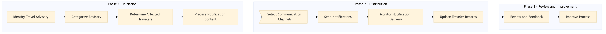

This process document outlines the distribution of travel advisory and alert notifications to travelers using various OTA and TMC systems.
| Trigger | A new travel advisory or alert is issued by a relevant authority or internal risk management system. |
| Outcome | Travelers receive timely, accurate, and actionable alerts through their preferred communication channels, ensuring their safety and well-being during their trips. |
| Systems | S/4HANA Concur T2 Concur Expense Salesforce Tableau AWS SageMaker Kafka Snowflake |

Click to enlarge
| Step | Name & Pain Point | Role | System | Input | Output | KPI | Flags |
|---|---|---|---|---|---|---|---|
| 1.1 | Identify Travel Advisory Delays in receiving or verifying advisories | Risk Manager | S/4HANA | Travel advisory details from relevant authorities | Verified travel advisory information | Time to verify and categorize the advisory | ⚠ Exception |
| 1.2 | Categorize Advisory Incorrect categorization leading to miscommunication | Risk Manager | S/4HANA | Verified travel advisory information | Categorized advisory (e.g., safety, health, political) | Accuracy of categorization | ⚠ Exception |
| 1.3 | Determine Affected Travelers Missing or inaccurate traveler data | Risk Manager | Concur T2, Concur Expense | Categorized advisory and traveler data | List of affected travelers | Time to identify affected travelers | ⚠ Exception |
| 1.4 | Prepare Notification Content Generic notifications failing to address individual needs | Risk Manager, Communication Specialist | Salesforce, Tableau | Categorized advisory and list of affected travelers | Customized notification content for each traveler | Relevance and accuracy of notification content | ⚠ Exception |
| 1.5 | Select Communication Channels Inaccessible or unavailable communication channels | Risk Manager, IT Specialist | Kafka, Snowflake | Traveler data and notification content | Selected communication channels (e.g., email, SMS, app push) | Coverage of all affected travelers | ⚠ Exception |
| 1.6 | Send Notifications Delays in sending notifications | IT Specialist | AWS SageMaker, Kafka, Snowflake | Notification content and selected channels | Sent notifications with timestamps | Time to send notifications | ⚠ Exception |
| 1.7 | Monitor Notification Delivery Undelivered or failed notifications | IT Specialist, Risk Manager | Kafka, Snowflake | Sent notifications with timestamps | Delivery status report | Percentage of successful deliveries | ⚠ Exception |
| 1.8 | Update Traveler Records Inaccurate or delayed record updates | Risk Manager, IT Specialist | Concur T2, Concur Expense | Delivery status report and traveler data | Updated traveler records with notification status | Time to update records | ⚠ Exception |
| 1.9 | Review and Feedback Low response rates or unhelpful feedback | Risk Manager, Communication Specialist | Salesforce, Tableau | Updated traveler records and feedback from travelers | Feedback report and recommendations for improvement | Quality of feedback received | ⚠ Exception |
| 1.10 | Improve Process Resistance to change or lack of resources | Risk Manager, IT Specialist | S/4HANA, AWS SageMaker | Feedback report and recommendations for improvement | Updated process documentation and system configurations | Number of improvements implemented | ⚠ Exception |